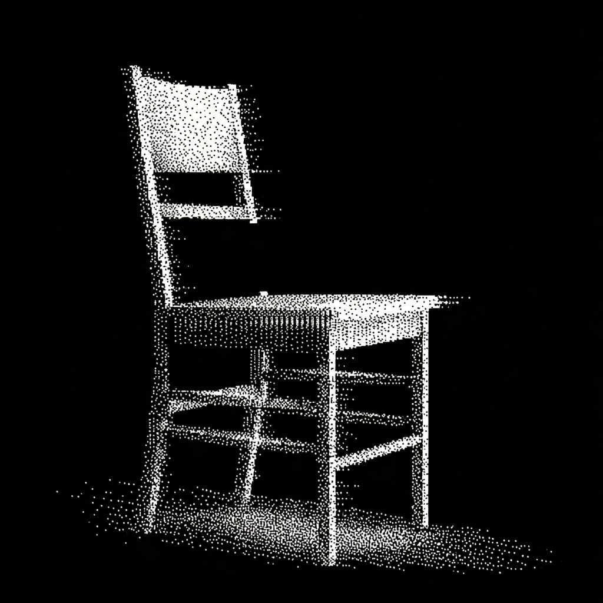
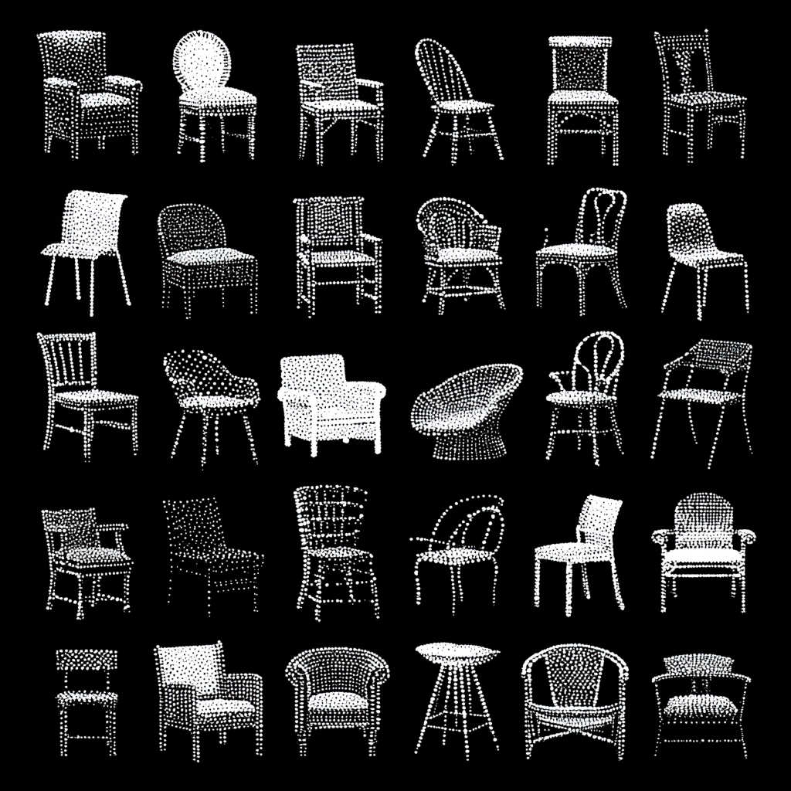
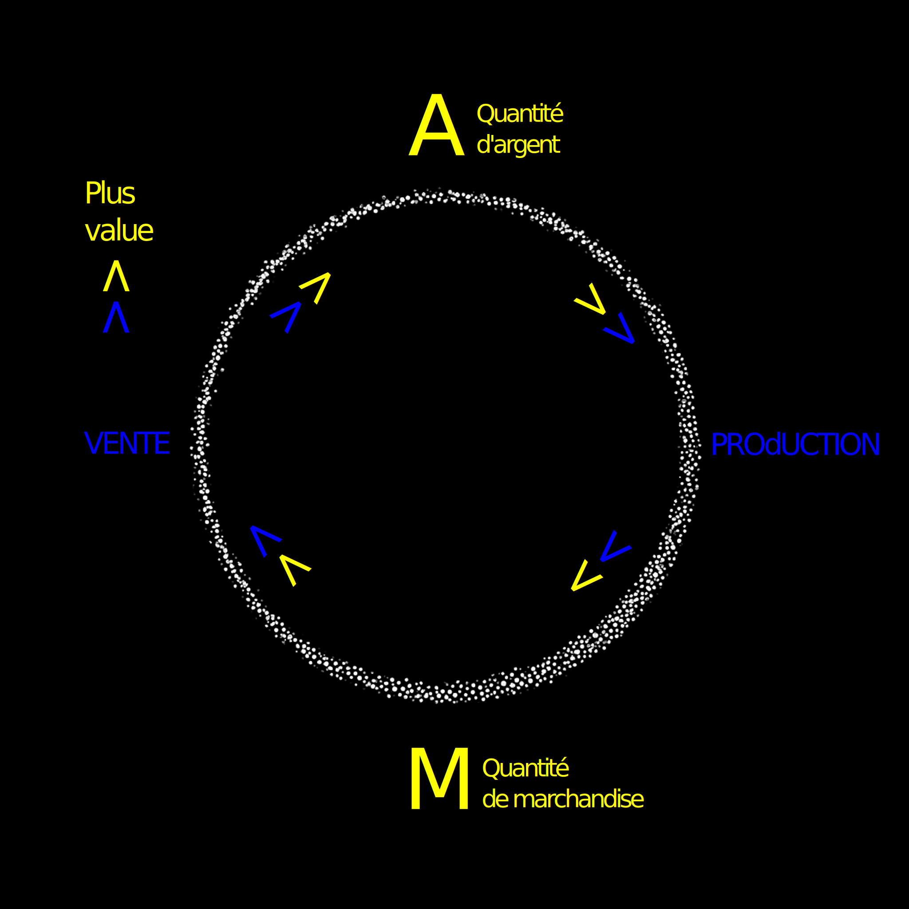
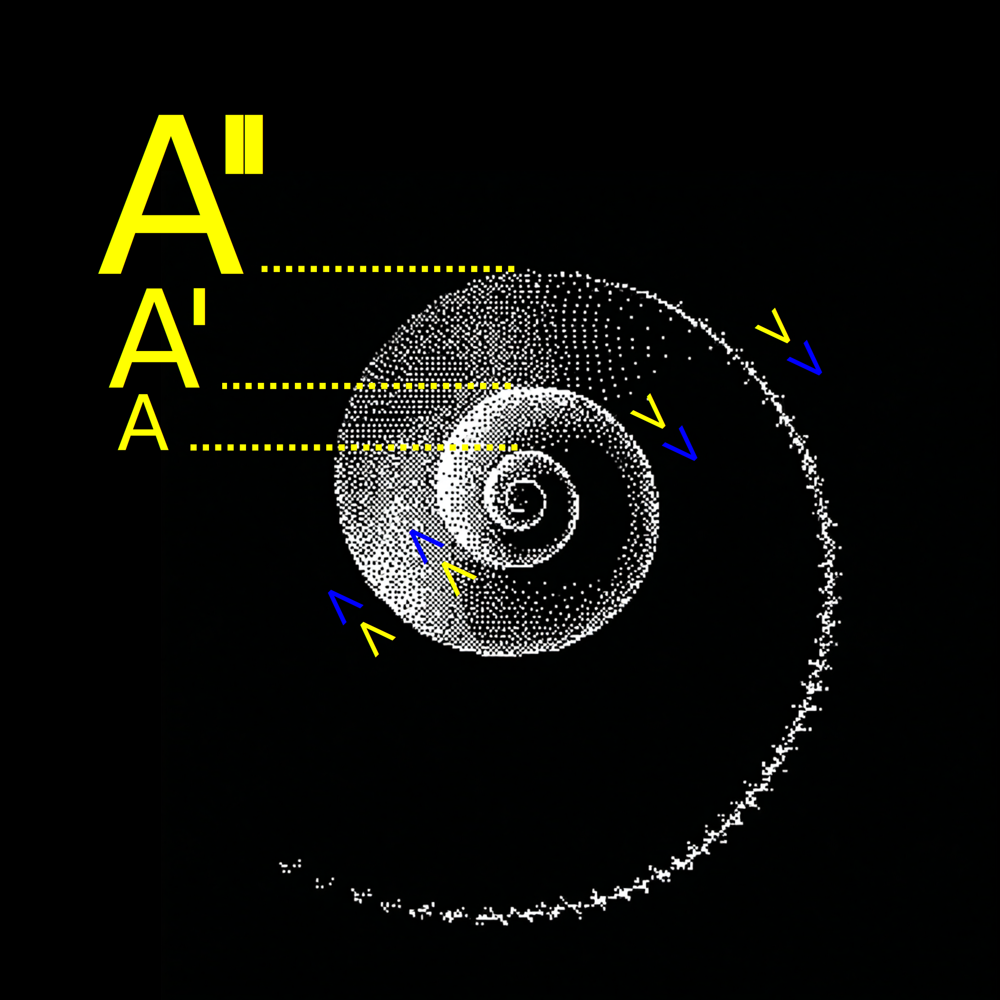
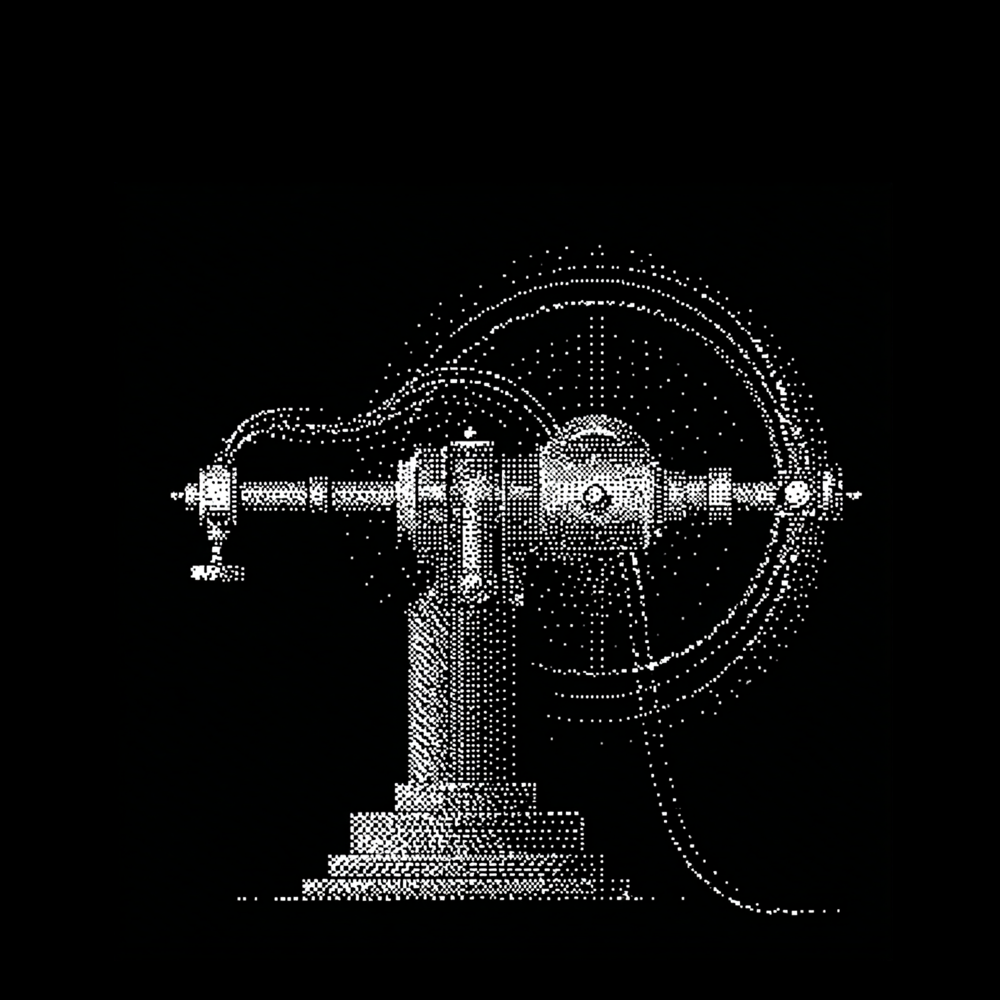

Mesurer la longueur de chaque côté → tous les côtés doivent être égaux
Mesurer chaque angle → tous les angles doivent être de 90°
Si toutes les conditions sont remplies → c'est un carré ✓
Reconnaître une chaise

Exemples de "chaises"
Chaise de bureau
Chaise de gaming
Chaise monobloc
Chaise longue
Chaise de jardin
Chaise pliante
Chaise à bascule
Chaise-sac à dos
Chaise gonflable
Chaise de massage
Chaise roulante
Chaise à porteurs
Chaise électrique
Chaise en glace
Chaise suspendue
Tabouret
Pouf et bean bags
Fauteuil de dentiste / coiffeur
Siège éjectable
Trône
Siège bébé
Comparaison : Carré vs Chaise
Reconnaitre un Carré
Reconnaitre une Chaise
Petit nombre de critères
Procédure facile à décrire
Paradigme de programmation traditionnel (simple algorithme de décision)
Pour un.e humain.e : procédure difficile à mettre en œuvre (sortir sa règle, son équerre, etc.)
Nombre potentiellement infini de critères
Procédure impossible à décrire
Nécessite un nouveau paradigme de programmation (apprentissage automatique)
Pour un.e humain.e : Procédure facile à mettre en œuvre (reconnaissance visuelle instantanée)
Apprentissage automatique

Racines culturelles et politiques
Ou "L'idéologie Californienne" (Richard Barbrook et Andy Cameron, 1996)
Contre-culture des années 60
Richard Brautigan - "All Watched Over by Machines of Loving Grace", 1967 Vidéo par Adam Curtis - "All Watched Over by Machines of Loving Grace", 2011
Le techno-utopisme des communes
Naissance du transhumanisme
Première cryogénisation humaine, James Bedford 1967
Extropianisme
Le cyberespace
William Gibson lit "the Neuromancer", BBC Late Show, 1991
John Perry Barlow récite "A Declaration of the Independence of Cyberspace", "Hackers: Outlaws and Angels", 2002
Les milliardaires
Apple "Think Different" narration Steve Jobs, 1997
Automatisation
Le cycle du capital

L'accumulation

L'automatisation

Compétitivité, innovation et viralité
C'est sa propre vitesse qui fait progresser la technique et ceci pour deux raisons : la première est qu'il faut entretenir les industries traditionnelles. La seconde n'est autre que la loi fondamentale de la société technicienne : "ce qui peut être fait techniquement le sera nécessairement". C'est ainsi que le progrès applique de nouvelles techniques et crée de nouvelles industries sans chercher à savoir si elles sont ou non souhaitables.
Dennis Gabor, 1971
Parce que tout ce qui est technique, sans distinction de bien et de mal, s'utilise forcément quand on l'a en main. Telle est la loi majeure de notre époque.
Jacques Ellul, La Technique ou l'Enjeu du siècle, 1954